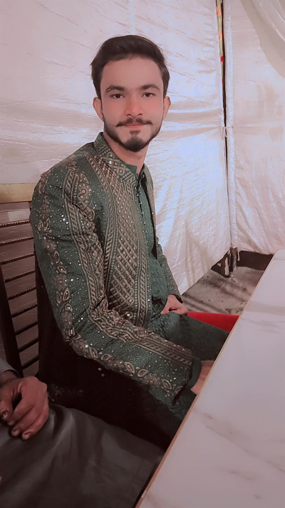
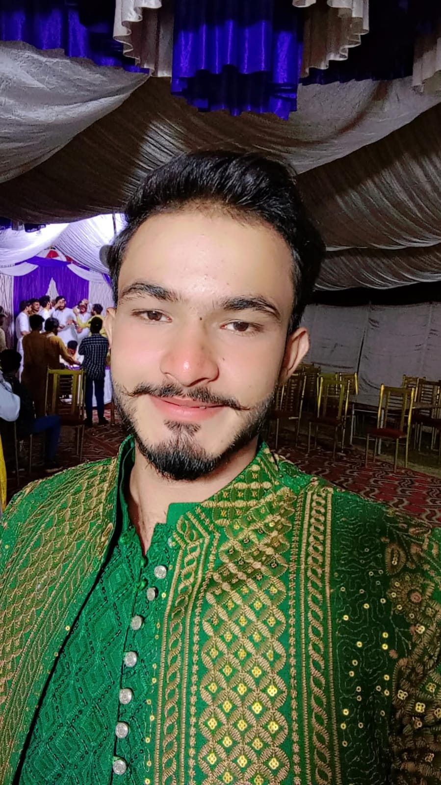

Compassion
Every patient arrives with a story. Listening without hurry is the first form of treatment.
Faisalabad · Pakistan
DoctorFaisalabad, Pakistan
Care, as I see it, lives in the details — the pause before an answer, the honesty in a difficult conversation, the dignity of being truly heard. This is where that approach lives.

01 About me
I am Ahsan Liaqat — a doctor based in Faisalabad, Pakistan. Good medicine, I believe, begins with listening: understanding the person in front of you, not only the presentation in the notes.
My approach is deliberate and unhurried — clear explanations, careful attention, and a standard of care that treats every patient as someone's family. Everything gathered on this page is a reflection of that intent: the philosophy, the practice, and the quiet moments in between.
02 Professional journey
Verified details are still being gathered. Each stage below is a reserved placeholder, ready for Ahsan's confirmed institutions, dates and roles — nothing here has been assumed.
—
Placeholder
Institution, degree and graduation year to be confirmed.
—
Placeholder
Hospital affiliation and dates to be confirmed.
—
Placeholder
Areas of practice and appointments to be confirmed.
Today
Current
A doctor based in Faisalabad (FSD), Pakistan.
03 My philosophy
“Medicine is a promise made in a moment of vulnerability — to be present, to be precise, and to make sure no one ever feels like a case number.”
Every patient arrives with a story. Listening without hurry is the first form of treatment.
Details decide outcomes. Careful observation, clear reasoning and no shortcuts.
Honest counsel, even when it is difficult. Trust is built in what is said plainly.
The privilege of care carries a duty — to the patient, to the family, to the profession.
04 The portrait
One photograph, held beneath a veil of forest and sage. Brush across the surface — with your cursor, or your fingertip — and let the portrait come through.

05 Gallery
Selected photographs from Ahsan's personal archive — quiet moments between the work.
Click any photograph to view it full size
06 Contact
Based in Faisalabad, Pakistan — open to professional correspondence, collaboration and conversation about patient-centred care.
Verified contact details will be published here as soon as they are provided — nothing is displayed that has not been confirmed.